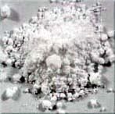

| Titane Dioxyde
Edouard Bastarache
- Sources:
-
- Le titane est un des composants les plus souvent rencontrés
dans la croûte terrestre, le neuvième en importance.
Il se rencontre sous la forme d'ilménite (titanate de fer)
et de rutile (bioxyde de titane).
- Le titane forme quatre oxydes distincts: le monoxyde de titane
(TiO), le trioxyde de dititane (Ti2O3), le bioxyde de titane (TiO2)
et le trioxyde de titane (TiO3).
-
- Sources d'Exposition Occupationnelle et
Environnementale:
-
- Le titane est fréquemment utilisé comme pigment
blanc dans une grande variété de peintures, papiers,
encres, plastiques, et autres produits du même ordre.
- L'exposition résulte de l'inhalation de poussières
de bioxyde de titane. L'exposition aux produits intermédiaires
de la production du bioxyde de titane peut aussi survenir.
- L'exposition peut aussi survenir lors de l'extraction des minerais,
dans la préparation du bioxyde de titane, et chez les industries
où cette poudre est emmagasinée et utilisée.
-
- Toxicologie Clinique:
-
- I- Voies d'Exposition:
-
- L'inhalation de bioxyde de titane est la voie d'exposition la
plus fréquente. L'ingestion est certainement possible lorsque
une certaine quantité de poussière se concentre
sur les surfaces muqueuses de l'oropharynx et du nasopharynx.
-
- II-Distribution, Métabolisme et Élimination:
-
- Le bioxyde de titane se retrouve dans les vaisseaux et ganglions
lymphatiques, témoignant d'une lente élimination
par ce procédé.
- Il n'y a aucune donnée sur l'absorption du titane.
- Le titane est excrété par les reins.
-
- III-Signes , Symptômes et Syndromes:
-
- A-Toxicité Aigue:
-
- Le bioxyde de titane est un irritant des voies respiratoires
supérieures, comme toute autre poussière nuisible.
Il n'existe pas de preuve qui nous indique qu'il induit une réaction
inflammatoire aigue aux concentrations rencontrées.
- Chez les travailleurs qui souffrent déjà de la
maladie pulmonaire obstructive chronique, le bioxyde de titane
peut entraîner une exacerbation des symptômes.
-
- B-Toxicité Chronique:
-
- Le bioxyde de titane se loge dans les poumons. Les particules
de cette poussière se retrouvent dans les ganglions régionaux
qui drainent les poumons, suggérant que ces particules
sont éliminées lentement par le système lymphatique.
- Il y a peu de preuve que le bioxyde de titane cause une réaction
pulmonaire inflammatoire chronique.
- Le bioxyde de titane est actuellement considéré
seulement comme une poussière nuisible qui ne peut causer
qu'une irritation des voies respiratoires supérieures.
-
- IV-Effets Génétiques:
-
- Il n'y a pas de données disponibles concernant ses effets
génétiques chez l'humain, de même que peu
de données épidémiologiques concernant son
pouvoir cancérogène.
- Les données récentes chez l'animal supporte la
conclusion que le bioxyde de titane est une poussière
nuisible et qu'il ne cause pas une augmentation de l'incidence
des taux de cancers.
-
- V-Gestion de la Toxicité ou de l'Exposition:
-
- Le bioxyde de titane est une poussière irritante, alors,
la gestion de l'exposition est de support. Les travailleurs exposés
devraient être retirés de l'exposition, et un traitement
pulmonaire de support devrait être fourni.
-
- A-Surveillance Médicale et Biologique:
-
- La plupart des épreuves de laboratoire ne sont pas utiles.
Le dosage du titane sérique et urinaire aide à identifier
l'exposition récente.
-
- B-Règlementation Occupationnelle et Environnementale:
-
- L'irritation des voies respiratoires supérieures peut
être réduite en gardant l'exposition à de
bas niveaux.
-
- Limite d'Exposition au Québec:
- VEMP (Valeur d'Exposition Moyenne Pondéré)
= 10 mg/m3, en tant que poussière totale.
-
- C-Contrôle de l'exposition:
-
- De bonnes interventions en hygiène industrielle et en
surveillance de l'environnement devraient limiter l'exposition
des travailleurs à la poussière de titane. Si les
employés doivent travailler dans des endroits où
il y a des niveaux élevés en bioxyde de titane avec
ventilation déficiente, une protection respiratoire adéquate
devrait être utilisée.
-
-
-
-
- Edouard Bastarache M.D. (Médecin du Travail et de
l'Environnement)
- Auteur de " Substitutions de matériaux céramiques
complexes "
- Sorel-Tracy
- Quebec
- Canada
- edouardb@sorel-tracy.qc.ca
- http://www.sorel-tracy.qc.ca/~edouardb/
-
-
-
-
- Références:
-
- 1-Occupational Medicine,Carl Zenz, dernière édition.
- 2-Clinical Environmental Health and Toxic Exposures, Sullivan
& Krieger; dernière édition.
- 3-Sax's Dangerous Properties of Industrial Materials, Lewis
C., dernière édition.
- 4-Toxicologie Industrielle et Intoxications Professionnelles,
Lauwerys R. dernière édition.
- 5-Chemical Hazards of the Workplace, Proctor & Hughes
More Articles
|